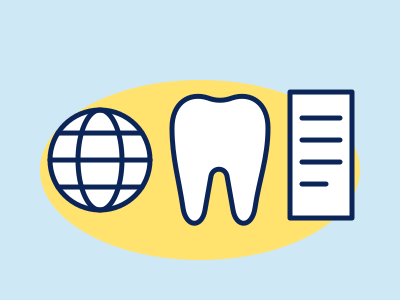

ORAL
公開 2026.10.07 / 更新 2026.10.09
 ORAL / JAPAN, UK & US
公開 2026.09.28 / 更新 2026.10.09
ORAL / JAPAN, UK & US
公開 2026.09.28 / 更新 2026.10.09
オーラルケア
歯みがき・舌の清掃・歯間清掃・洗口液など毎日の口のケアと、歯の着色・ホワイトニングの制度の違いを、公的機関や学会の資料で整理した記事です。

ORAL / EU, UK, US & JAPANホワイトニング、歯科とセルフサロンは何が違う？
歯科とセルフサロンの違い、日本で過酸化物の漂白材が医療機器である理由、EUの過酸化水素の3段階、英米の説明、契約と個人輸入の注意を出典つきで整理。商品・医院の紹介なし
+ 記事を読むORAL / JAPAN, UK & US口臭ケアの基本
舌の清掃は必要か、洗口液はいつ使うか。フロス・電動歯ブラシも含め、日本・英国・米国の公的機関や学会の見解の違いと根拠の強さを整理。受診の目安も
+ 記事を読む